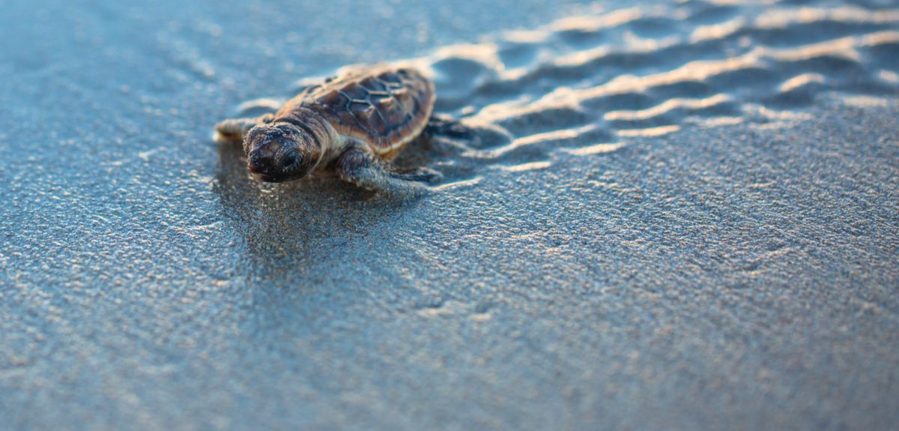

There are 250 different species of turtles in the world. Sea turtles, which are seven of them, are marine life. The remaining 243 species are terrestrial or dwell in freshwater marshes and ponds. Tortoises are the name for turtles that only live on land, or terrestrial turtles. The coastlines of Sri Lanka are visited by five of the world's seven species of sea turtles during the breeding season. They are the Olive Ridley (Lepidochelys olivacea), Green (Chelonia mydas), Hawksbill (Eretmochelys imbricata), Loggerhead (Caretta caretta), and Leatherback (Dermochelys coriacea) turtles. In Tamil, the sea turtles are referred to as Amai and in Sinhala respectively, Kesbawa.